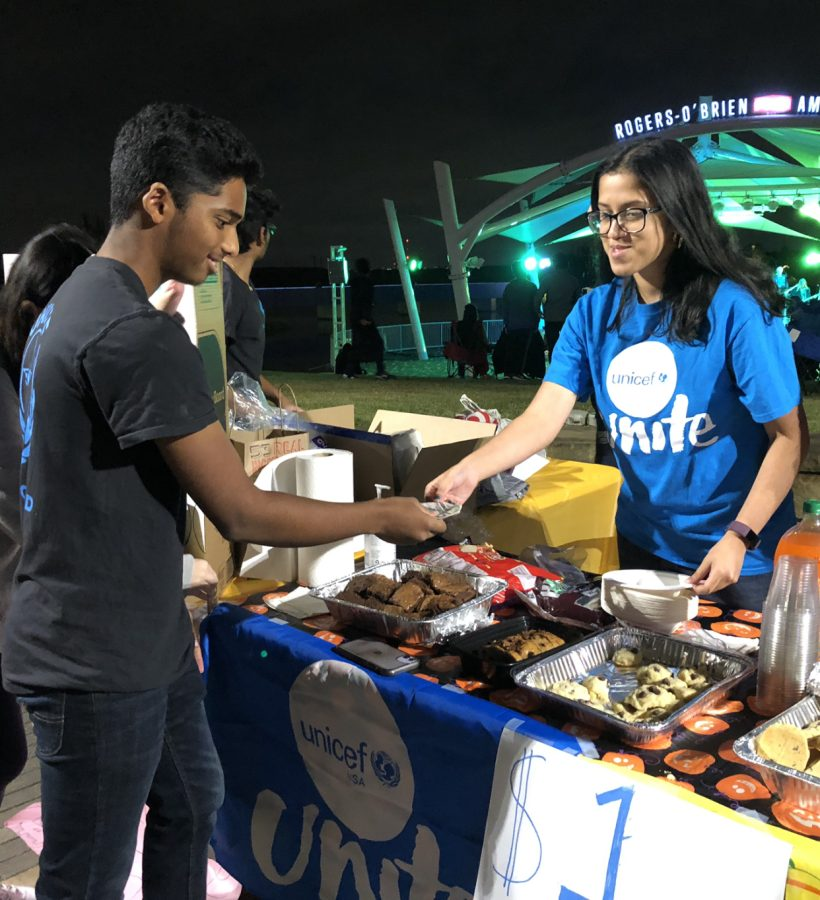
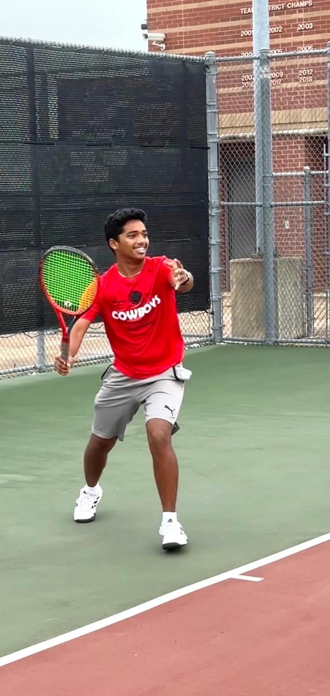

USA National Youth Ambassador
As a UNICEF USA National Youth Ambassador for 2 consecutive years, I had the privilege of representing UNICEF and advocating for children's rights and well-being.
Big Event Volunteer

As a Big Event Volunteer, I participated in Texas A&M's largest day of service helping beautify the community around campus.
Tennis Coaching for Youth
As a tennis coach for youth, I have had the opportunity to teach young athletes, helping them to improve their skills on and off the court.
Engineering Honors Executive Committee Service Chair

As the Service Chair for the Engineering Honors Executive Committee, I organized various community service events and initiatives to appreciate our faculty, staff, and students.
Hope Health Care Volunteer
As a volunteer at Hope Health Care, I provided comfort care as a companion to many old age and underserved people in the community.